SECURElogBook también permite crear listas. Una vez creada una lista, podrás moverla y copiarla.
Cuanto más personalices el menú Favoritos según tus necesidades, más fácil y rápido será agregar todo.
Una vez que completes la lista, no es necesario eliminarla. Al contrario, cuanta más información tenga la aplicación, más te ayudará. Si utilizas la aplicación para hacer tus listas de la compra, el sistema de búsqueda te permitirá saber cosas como:
. ¿Con qué frecuencia haces compras?
. ¿Con qué frecuencia compras verduras?
. ¡Si agregas el nombre de la tienda, incluso podrás saber dónde compraste esa tarta que tanto te gustó!
Cuando termines de comprar, puedes agregar el precio total en la cabecera de la lista. Luego, si usas la misma lista de la compra en diferentes tiendas, podrás ver la diferencia de precio.
Cómo crear una lista
1. Abre SECURElogBook y ve a la ventana principal, con fondo azul:

2. Presiona el botón (I) para agregar una nueva tarea/registro.
3. Una vez que se abre la ventana del creador (fondo verde), podemos crear nuestra tarea/registro:

4. Puedes darle el nombre que quieras a tu lista, pero llamémosla "Lista de la compra":
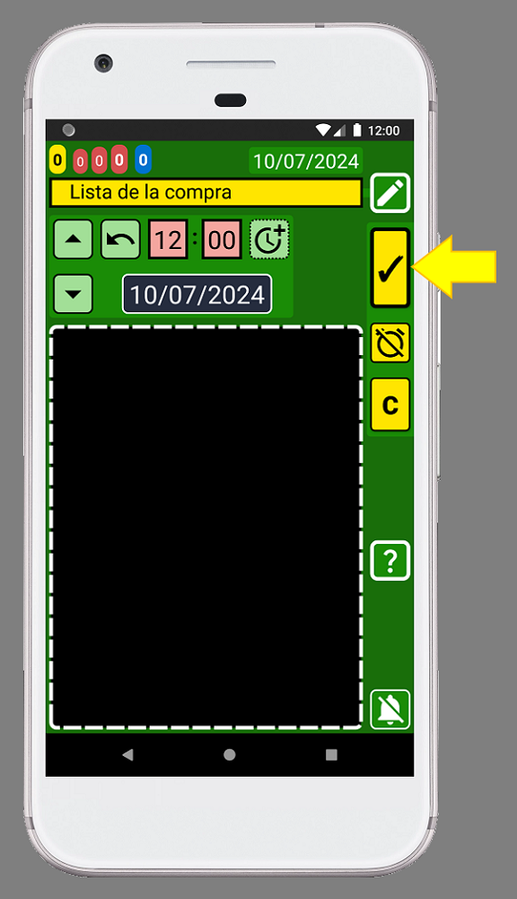
5. Después de agregar el texto "Lista de la compra", guarda el registro presionando el botón indicado con la flecha amarilla (imagen de arriba).
6. Toca el registro "Lista de la compra" para editarlo:
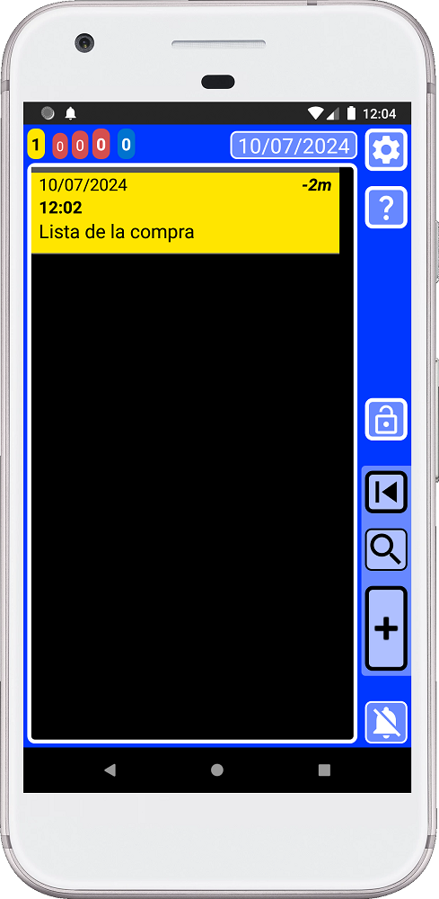
7. La ventana del editor (fondo verde azulado) mostrará el registro "Lista de la compra":
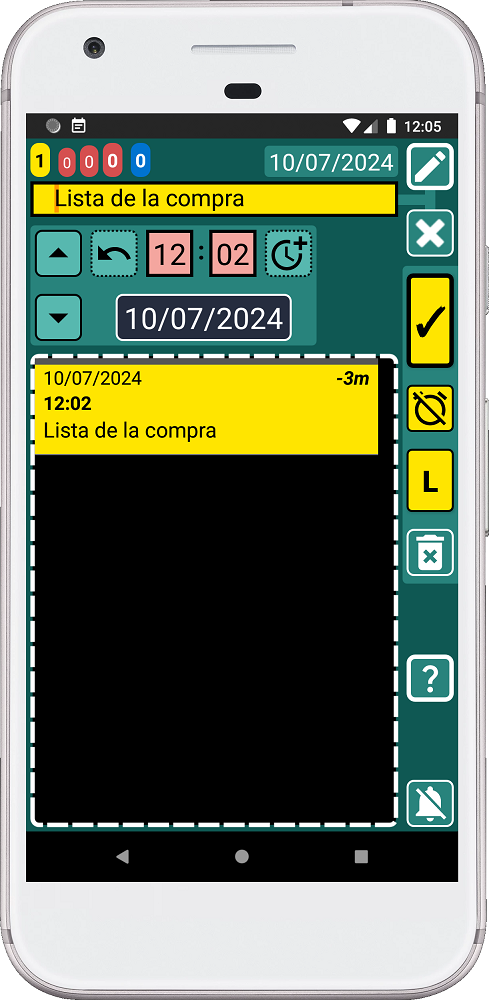
8. Borre la caja de texto presionando el botón indicado con la flecha amarilla:
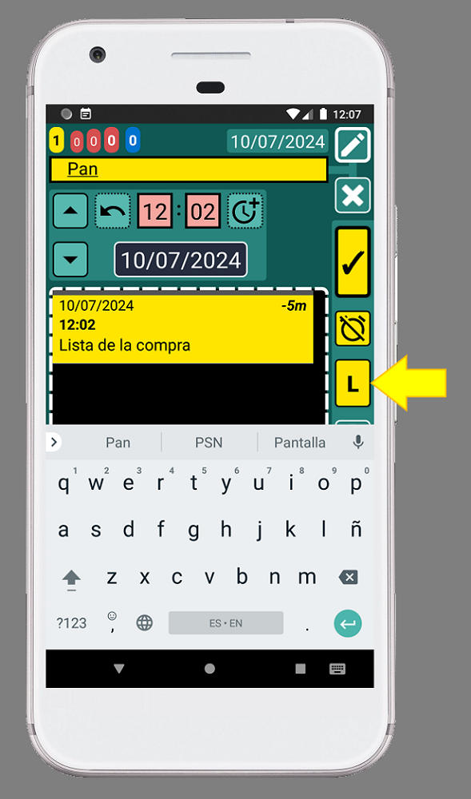
9. Escribe o selecciona desde el menú Favoritos
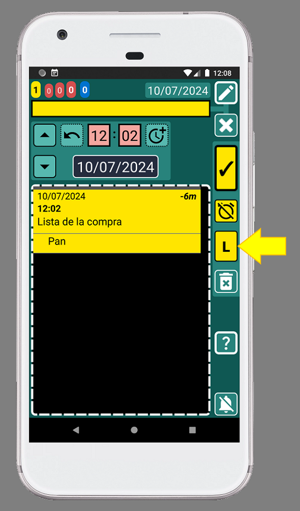
10. Después de agregar el texto "Pan", presiona el botón con la "L" (lista), indicado con la flecha amarilla. Esto añadirá el artículo "Pan" a la lista:

Cada vez que agregamos un artículo a la lista, la caja de texto se borrará.
Observa cómo el registro "Pan" se ha añadido debajo del registro "Lista de la compra" (imagen de arriba).
A partir de ahora, “Pan” estará vinculado a “Lista de la compra”.
11. Agreguemos "Huevos" a la lista. Escribe "Huevos" o selecciónelo desde el menú Favoritos
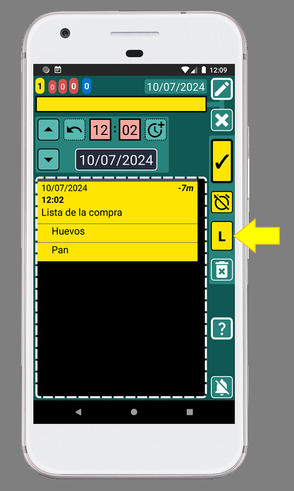
12. Agreguemos "Leche" a la lista. Escribe "Leche" o selecciónela desde el menú Favoritos
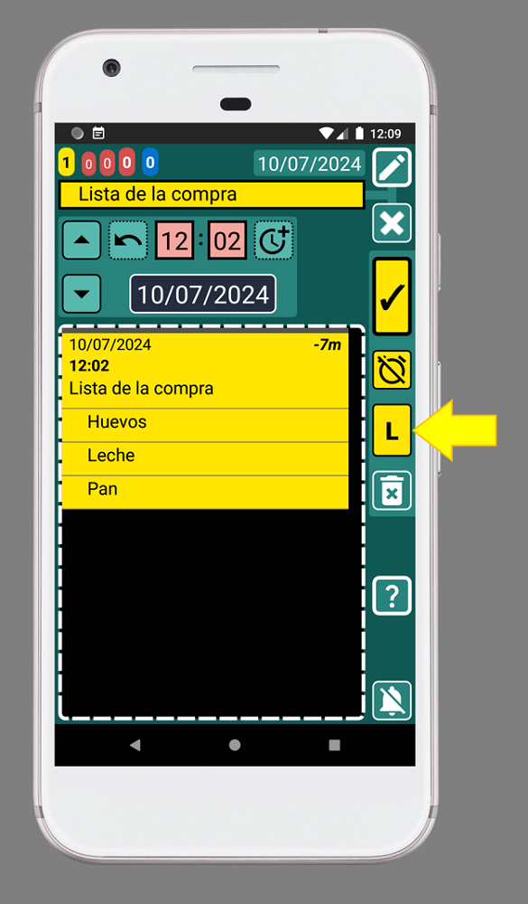
Ten en cuenta que los artículos en la lista se ordenarán alfabéticamente. Si deseas cambiar el orden de los artículos, antes de crear los registros, puedes añadir delante del texto: 1. , 2. , 3. , ... Los números te ayudarán a ordenar la lista.
13. Presiona el botón de retroceso en tu teléfono para volver a la ventana principal:
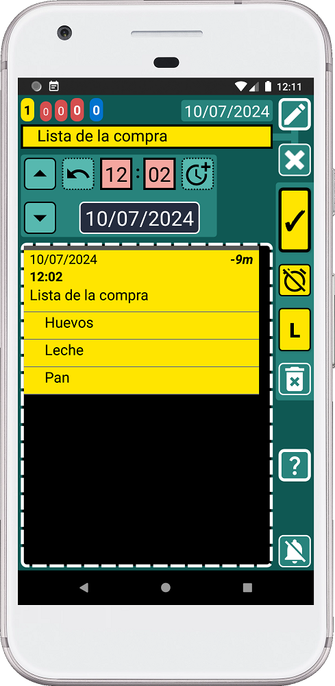
¡Bien hecho! ¡Has creado tu primera lista de la compra!
Cómo usar la lista
Una vez que tenemos una lista, los elementos están vinculados al primer registro, en este caso "Lista de la compra". Podemos usar ese registro para mover la lista en el tiempo o crear una copia de toda la lista.
Una vez que termines la lista, puedes enviarla al momento apropiado editando y cambiando la hora del primer registro de la lista.
1. Para completar un elemento de la lista, puedes tocarlo. Indiquemos que ya hemos puesto los huevos en el carrito, lo que significa que la tarea está completada. Para hacerlo, toca "Huevos" para abrir el registro de "Huevos":
2. Para completar el registro presiona el botón con la flecha amarilla (imagen de arriba).
Ahora, los botones de registro están en negro, indicando que el registro/tarea está completado:
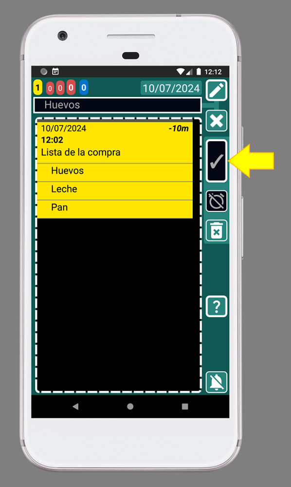
3. Para guardar el registro y volver atrás, presiona el botón indicado con la flecha amarilla (imagen de arriba).
Ahora podemos ver que hemos completado el registro porque el está negro:
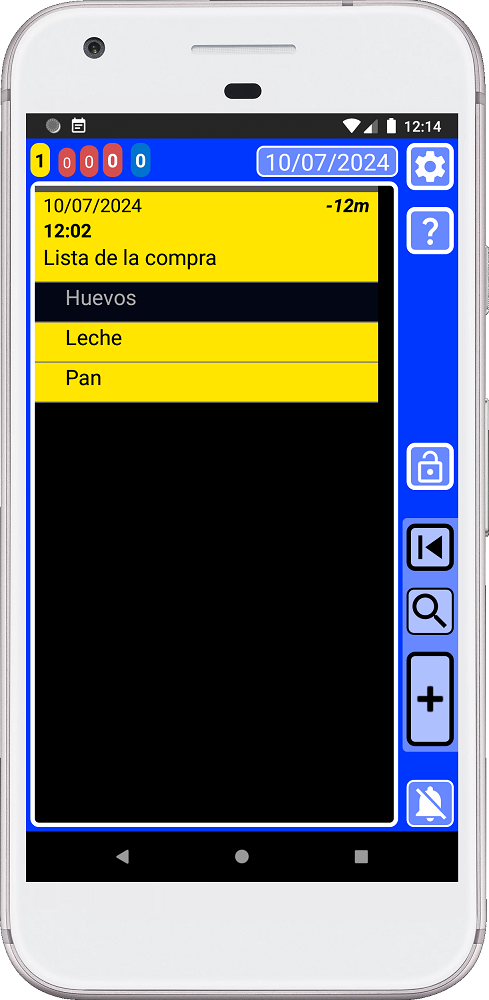
4. Seleccione otro elemento de la lista que sea amarillo y vuelva al paso 2 hasta que no queden más elementos amarillos en la lista (como en la imagen de abajo):
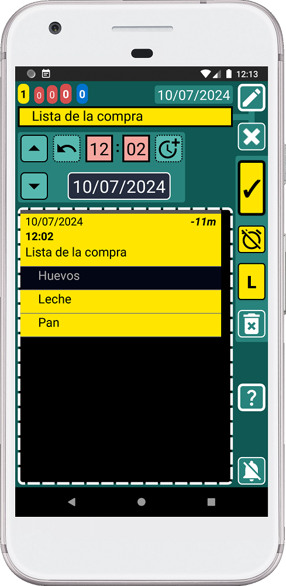
5. Ahora que todo está en el carrito, puedes completar (volver negro) el registro de "Lista de la compra":
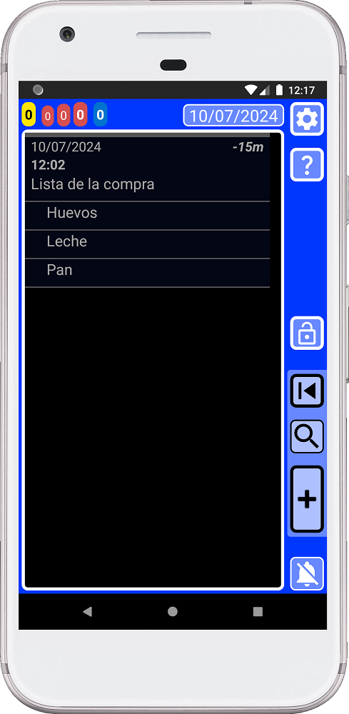
¡Misión cumplida, la compra está terminada!
Gracias a SECURElogBook, ahora podrás ver con qué frecuencia compra buscando "Lista de la compra". Si agrega el nombre de la tienda después de "Lista de la compra", al buscar un producto dentro de sus datos, la búsqueda mostrará la lista con el nombre de la tienda. Esto te ayudará a saber dónde compras los artículos.
También puedes usar la lista para describir un proceso del trabajo. Cuando crees una lista en la que necesitas ordenar los elementos de una manera específica, asegúrate de agregar un número al frente para ordenarlos (cuando los crees):
1. Primer paso.
2. Segund paso.
…
Recuerde que las listas siempre están ordenadas alfabéticamente.
Cómo eliminar un elemento de la lista
Para eliminar un elemento de la lista, debemos hacerlo desde la ventana principal.
1. Abre SECURElogBook y ve a la ventana principal, con fondo azul:
2. Vamos a eliminar el registro de "Leche". Para hacerlo, simplemente toca en "Leche" para editarlo:
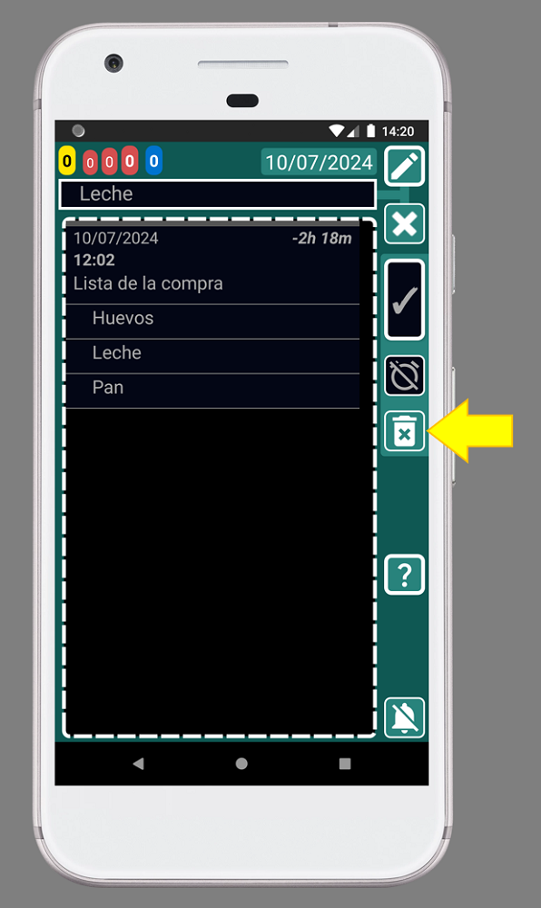
3. Luego presiona el botón indicado con la flecha amarilla (imagen de arriba):
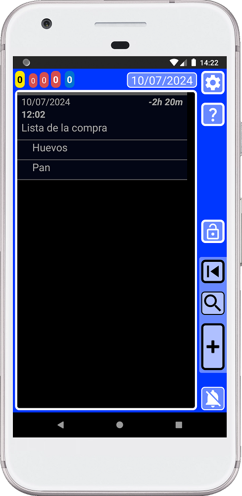
Después de confirmar que queremos eliminar el artículo, se eliminará el registro “Leche”.
En una lista, todos los registros están vinculados al registro principal de esa lista. Por eso puedes eliminar toda la lista eliminando el registro principal. También puedes mover y copiar toda la lista moviendo o copiando el registro principal en la lista.
SECURElogBook facilita el proceso de la compra porque siempre está contigo. Puedes crear una lista de la compra con días de anticipación y agregar elementos a medida que los recuerdas. Además, no necesitas perder tiempo adivinando o pensando en qué comprar. Puedes ver lo que normalmente compras gracias al menú Favoritos. Al mirar tu lista de la compra, te ayudará a darte cuenta si te falta algo o no.
MODO TURBO: Puedes buscar simplemente listas de la compra en tus datos y elegir una que tenga lo que necesitas. Luego, puedes crear una copia. ¡Ole! ¡Récord mundial de creación de la lista de la compra! 😉 Recuerda que siempre puedes agregar o quitar elementos de la lista copiada.
Consejo 1: Acostúmbrate a agregar todo lo que normalmente compras a tu menú Favoritos. No es tan difícil 😉 Te ahorrará mucho tiempo a largo plazo. Si lo haces, en poco tiempo podrás hacer tu lista de la compra como un profesional.
Consejo 2: Siempre puedes usar más de una categoría de tu menú Favoritos para definir todo lo que normalmente compras:
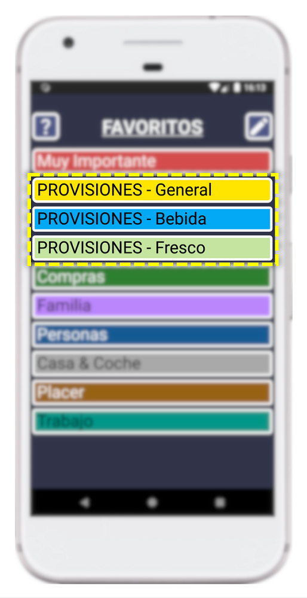
Consejo 3: Normalmente creo la lista de la compra como un registro amarillo. De esta manera siempre estará resaltada y fácil de encontrar. Comienzo el proceso tan pronto como noto que necesito comprar algo. Luego, creo una lista de la compra y agrego el artículo. Con el tiempo, recordaré que necesito comprar más cosas, así que las agrego de inmediato. Finalmente, cuando decido que voy a hacer la compra, le echo un vistazo rápido a mi lista de provisiones en Favoritos para asegurarme de que no me falte nada.